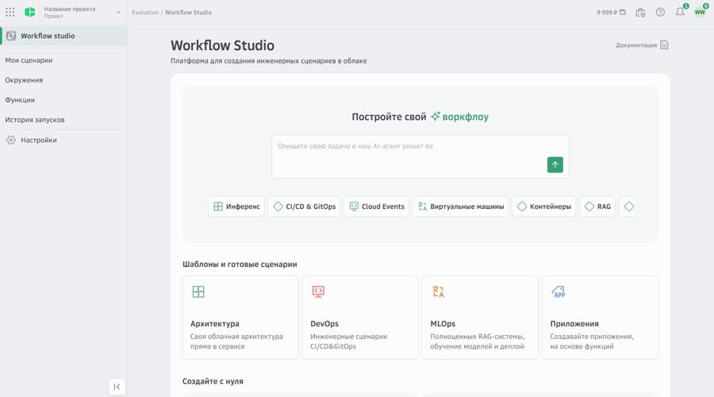
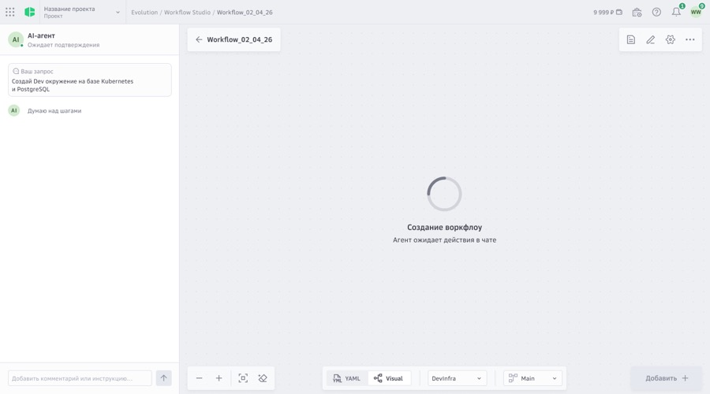
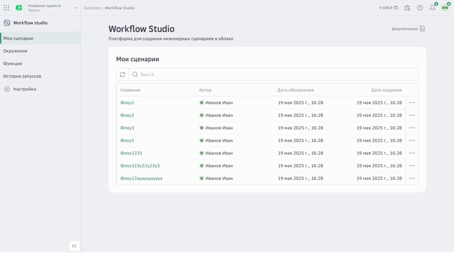

CLOUD TOOLING / CONCEPT
Workflow Studio
A concept for agent-assisted pipeline building inside Cloud.ru's Evolution platform. Instead of assembling stages by hand on an empty canvas, you describe the engineering task in plain language and an agent proposes the steps — then hands you back an ordinary, editable workflow.



Concept work. Selected screens from a 14-screen exploration.